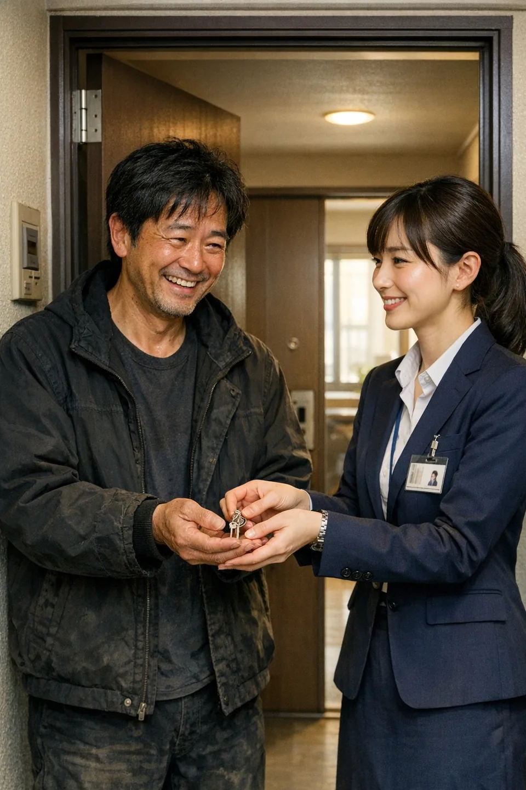

01
住まいを整える
現在の主軸は、一般社団法人相模原ダルクに通所する約60人の利用者のナイトケアハウス運営です。回復や就労の土台となる、日々の住まいを支えています。
- ナイトケアハウスの運営
- 出所後の一時的な住まい・DV被害者とご家族の避難住居
- 住まいを探すための状況整理
- 物件・居住形態のご提案
- 契約や入居に向けた手続きの確認
支援内容OUR SUPPORT
一人ひとりの状況に合わせて、住まいと必要な支援を一緒に整えます。
FOR YOU
ご相談の利用条件は特にありません。他の不動産会社で断られた方も、ぜひご相談ください。ご本人・ご家族・支援機関からのお問い合わせを受け付けています。
OUR SUPPORT
01
現在の主軸は、一般社団法人相模原ダルクに通所する約60人の利用者のナイトケアハウス運営です。回復や就労の土台となる、日々の住まいを支えています。

02
就労・就労準備支援は、代表の田中秀泰が代表を務める一般社団法人相模原ダルクの強みです。地域で10年以上にわたり、多くの方を一般就労につないできました。
相模原ダルクでは、障害福祉サービス制度のもと、お弁当・惣菜の販売や無農薬野菜を主軸とする農業を行う就労支援事業所を運営しています。ルミライズはこうした支援や外部の就労サービスと連携し、住まいと仕事を一緒に考えます。
お仕事にお困りの場合は、住まい探しと並行して就労支援につなぎます。利用できる制度や条件は、状況を確認してご案内します。

03
入居後も、困りごとを相談できる関係を続けます。就労や日々の活動を通して仲間と出会い、共同体の中で必要とされる実感を持てることを大切にしています。
SERVICE GUIDE
東京都・神奈川県・千葉県
ご希望の地域をお知らせください。住まいのご提案は、空室状況や生活状況、必要な支援を確認したうえでご案内します。
初回相談は無料です。
その後の費用は、支援内容によって異なります。入居時の初期費用・家賃と、支援にかかる費用を分けて、相談時にご確認ください。
支援内容と費用を相談する住まい探しや手続きの確認、関係機関への橋渡し、入居後のフォローを行います。制度の利用や入居の可否は、個別の条件を確認したうえでご案内します。
上記5言語は、通訳・同行サポートが常時可能です。必要な言語や同行先をお知らせください。
その他の言語にも対応できます。まずはご相談ください。
電話受付 10:00〜17:00（日曜休業） 042-704-8308
Housing First まず、住まいから
回復や就労の前提となる、安心して暮らせる場所の確保を優先します。
入居後も面談とフォローを続け、孤立を防ぐ関係づくりを大切にします。
必要な支援へつなぎ、状況の変化に応じて暮らしを再調整します。
FOR PARTNERS
医療・福祉・就労・司法など、関係機関との連携を大切にしています。住まいの確保と、その後の生活に必要な支援を一緒に整理します。
ご紹介や支援の連携についても、電話またはメールでご相談ください。
連携について相談するSUPPORT IN PRACTICE